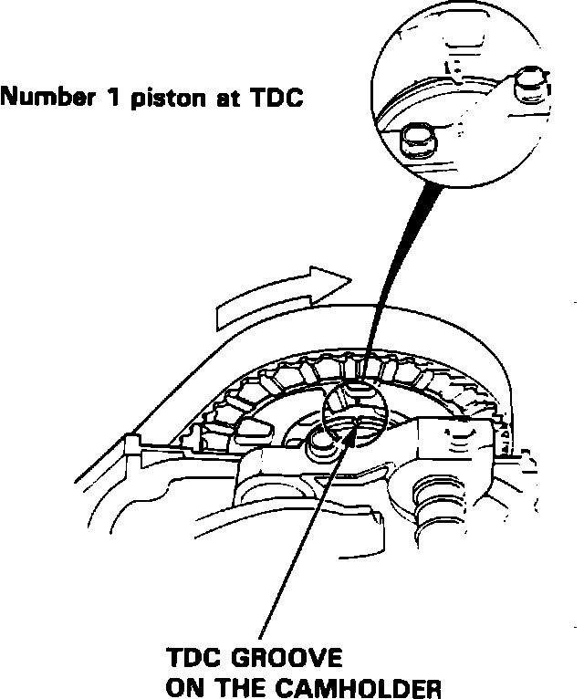
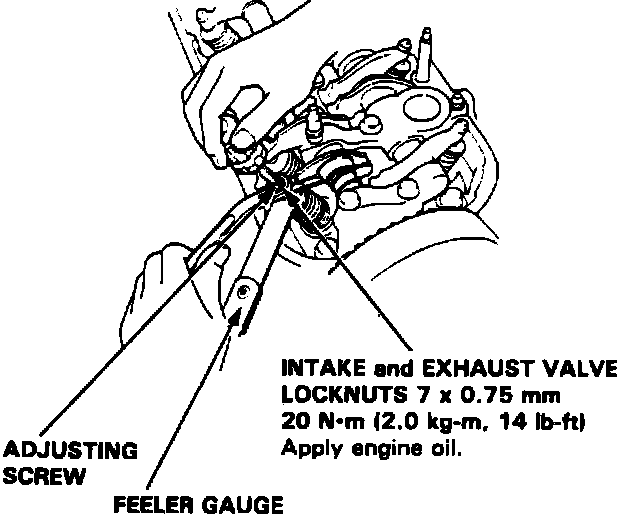

Valve Clearance: Adjustments
Fig. 57 Piston At TDC:

Fig. 58 Valve Adjustment:

Valves should be adjusted cold with cylinder head temperature below 100°F.
1. Remove cylinder head cover.
2. Align No. 1 piston to TDC with TDC groove on No. 1 cam holder, Fig. 57, then adjust No. 1 cylinder valves.
3. Loosen locknut, then turn adjustment screw until feeler gauge slides back and forth with slight amount of drag, Fig. 58.
4. Tighten locknut, then check clearance, readjust if required.
5. Valve Clearance Specifications are as follows:
Intake Valve: 0.009-0.011 inches
Exhaust Valve: 0.011-0.013 inches
6. Rotate crankshaft 144° counterclockwise (cam pulley turns 72°). Align No. 2 piston TDC mark with TDC groove, then adjust No. 2 cylinder valves.
7. Rotate crankshaft 144° counterclockwise (cam pulley turns 72°). Align No. 4 piston TDC mark with TDC groove, then adjust No. 4 cylinder valves.
8. Rotate crankshaft 144° counterclockwise (cam pulley turns 72°). Align No. 5 piston TDC mark with TDC groove, then adjust No. 5 cylinder valves.
9. Rotate crankshaft 144° counterclockwise (cam pulley turns 72°). Align No. 3 piston TDC mark with TDC groove, then adjust No. 3 cylinder valves.